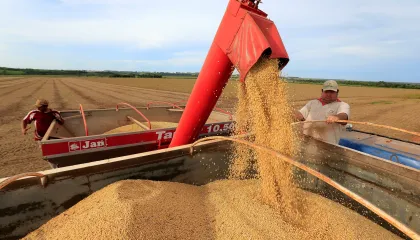

Meus projetos:

O manejo e cuidado com as vacas leiteiras
O manejo e cuidado com as vacas leiteiras abrangem diversas práticas, desde a alimentação até o ambiente de confinamento, com o objetivo de garantir a saúde, bem-estar e produtividade do rebanho

Avaliação sobre o Scratch
Esta é uma atividade avaliativa sobre as funconalidades do Scratch que foi desenvolvida para aplicar com os alunos e testar seus conhecimentos. Foi elaborada ...

Avaliação sobre o Scratch
Esta é uma atividade avaliativa sobre as funconalidades do Scratch que foi desenvolvida para aplicar com os alunos e testar seus conhecimentos. Foi elaborada ...